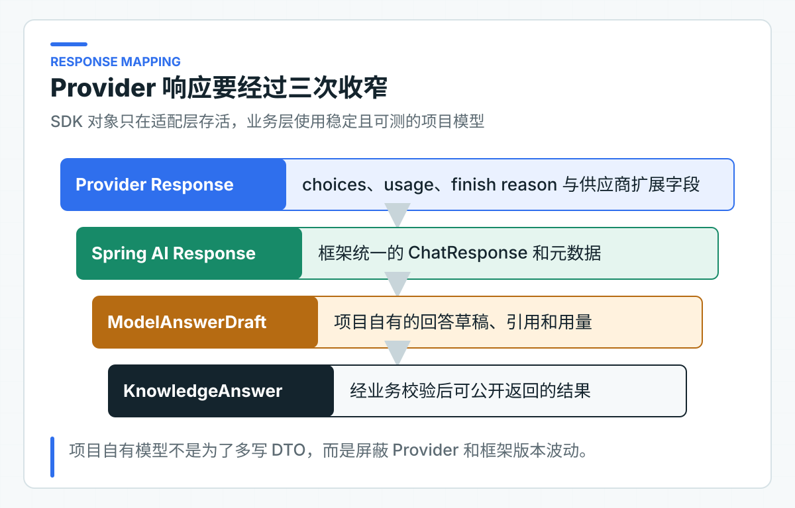

一次模型调用内部发生了什么：Message、Options、Token 与响应元数据
ChatClient 返回的正文最容易被看到，也最容易让人忽略其他信息。等到响应被截断、Token 突然增加或模型供应商（Provider）切换时，只有一段文本的业务日志几乎帮不上忙。
适配器会同时取出 Message、Options、模型名、Token 用量和结束原因，再映射成项目自己的响应类型。业务层不依赖 Spring AI 对象，却能用这些字段分析调用成本、识别异常，并比较前后两次模型结果。
先把消息角色和调用参数分开
Message 角色会影响模型行为
System Message 表达稳定规则，例如只能依据当前授权政策回答、证据不足时拒答、不得声称执行了业务动作。User Message 承载当前问题、授权知识上下文和输出格式要求。
二者分开不是为了代码好看。Provider 会按角色处理消息；测试也能明确验证系统规则是否存在，以及用户输入是否用标签与系统规则分开。把全部内容拼成一个字符串，会让规则、数据和用户指令混在一起。
当前适配器的调用形态是：
chatClient.prompt()
.system(prompt.systemInstruction())
.user(buildUserMessage(prompt, outputConverter.getFormat()))
.call()
.responseEntity(outputConverter);
角色分层还不够，每条 Message 中的内容来源也要可追溯。System Message 来自版本化资源，政策上下文来自经过授权的数据源，用户问题来自当前请求。三者虽然最终都会变成 Token，但它们在应用中的信任等级和审计责任完全不同。
对于多轮对话，历史 Assistant Message 也不能自动升级为事实。上一轮模型可能已经说错，本轮把它作为“可信背景”会让错误继续放大。需要保留对话时，对话历史和系统查询到的事实应明确分开。
Options 由调用用例决定
模型名、temperature、最大输出长度和 Provider 扩展参数属于基础设施配置。业务用例可以提出“需要确定性回答”或“允许多少输出”的要求，但不应该散落具体 Provider 字段。
项目当前只开放已经有明确用途的运行参数。每增加一个可配置项，就增加一组兼容、默认值和回归责任。公司项目应从明确需求出发，例如合规回答要求低随机性，或成本预算需要限制输出 Token。
参数还需要区分业务级意图和 Provider 级实现。业务可以提出“回答应稳定”、“最多输出 800 字”或“允许调用某类 Tool”，适配器再把这些要求映射为 temperature、max tokens 和 Provider 具体开关。把 Provider 字段直接放进 Controller 请求，会让客户端绕过成本和安全策略。
配置变更也是模型行为变更。即使 Prompt 和代码没动，temperature、输出上限或 Provider 推理开关改变，固定评测集（Golden Set）的结果也可能变化。因此这些参数要进入版本记录，不能只存在运维人员的临时配置里。
只向业务层暴露需要的响应信息
ModelAnswerDraft 与 ModelUsage 是项目自己的应用类型。Spring AI 的 ChatResponse、Usage 和 Provider metadata 只在适配器中出现。
这样做带来两个直接收益。业务校验不依赖框架；替换 Provider 时只需要重新验证适配器的元数据映射。
模型返回的用量信息（usage）可能缺失。有些 OpenAI 兼容客户端会把“整个 usage 不存在”映射成 0/0/0，适配器必须重新识别这种情况。当前知识回答链路把全 0 视为元数据不可用并拒绝结果；usage 存在但个别分项缺失时，才将该分项记为 0。两种情况不能混为一谈。

映射时要完整保留模型名、Token 和结束原因（finish reason），因为它们会用于成本统计、故障定位和版本对比。Provider 内部的临时调试字段可以留在适配器日志，不需要向 Controller 暴露。
映射层也是处理版本差异的位置。不同 Provider 对缓存 Token、推理 Token、内容过滤和请求 ID 的表达不同。项目不需要为最小公分母丢掉所有扩展信息，但只有已经被业务、成本统计或审计使用的字段，才值得加入对外响应。
结束原因不能一律当作成功
stop 通常表示模型正常结束；长度限制、内容过滤、Tool 调用或未知原因需要不同处理。不能把所有结束状态都当作成功文本。
项目把结束原因规范为小写字符串，保留未知值，而不是定义一个看似完整但会随 Provider 扩展失效的枚举。业务层可以对已知风险值做判断，报告仍能记录新值。
length 或同类结束原因通常意味着输出被上限截断。对普通文本，它可能只是句子没写完；对 JSON，它往往直接变成无法解析。安全过滤则需要区分 Provider 拒绝、项目业务拒答和上游政策拦截，三者对用户提示和评测统计的含义不同。
未知 finish reason 不应被映射成 stop。它应保留原值，并根据当前场景采用保守处理。这样 Provider 增加新结束类型时，系统至少会留下可排查证据，不会把风险响应伪装成正常完成。
元数据映射错误怎样暴露
自动化测试要固定项目内部的元数据映射：模型名不能丢失，输入、输出和总 Token 要保持一致，未知 finish reason 不能伪装成 stop。当前协议夹具覆盖正常 stop 响应和 usage 整体缺失两条路径：
这项测试通过本地 OpenAI 兼容 HTTP 夹具检查模型名、三类 Token、结束原因和缺失 usage 的拒绝行为，不访问真实模型。未知 finish reason 的保留策略已经实现在适配器中；更换 Provider 时还应把目标 Provider 的未知值样本加入兼容测试。
模型首次接入、版本升级或更换 Provider 时，还要执行在线 API 调用，确认实际返回的模型名、usage、结束原因和内容审核状态能被当前适配器完整保留。结果应写入兼容性验证报告，不要把一次成功响应直接当作长期兼容结论。
自动化测试负责稳定回归，真实调用负责发现供应商行为差异。线上业务请求本身也应持续记录低敏元数据，出现异常时才能定位到具体模型和结束原因。
在线验证不能只看回答文本。还要核对流式与非流式返回是否使用同一模型名，usage 是否包含缓存或推理 Token，内容过滤时能否取得稳定结束原因，限流和超时是否保留 Provider request id。字段缺失时应明确记录 unknown，不能用零值伪装成供应商已经返回。
这些字段还要区分“每次请求记录”和“适合聚合为指标”。模型名、运行模式、结果类型和低基数 finish reason 可以用于指标维度。调用链 ID（Trace ID）用于定位单次请求，不应当作指标标签。问题正文和 Prompt 只能进入受控记录，不参与时序指标聚合。
对 Token 成本做分析时，应优先保留 Provider 返回的原始分类和总数。不同 Provider 对系统消息、缓存输入和推理过程的计费方式可能不同，业务代码不应自己用字符数反推“精确 Token”。估算值可以用于请求前的上限保护，需要和实际 usage 明确区分。
记录这些元数据时，还要控制日志范围。可以记录模型、Token、finish reason、延迟、执行模式和 Trace ID。问题正文、完整 Prompt、政策原文、密钥和用户身份不应成为普通日志或指标标签。
需要排查内容问题时，可以在受控审计存储中保存脱敏样本，并设置权限、保留周期和删除机制。直接把全部 Prompt 打进应用日志，开发阶段很方便，生产环境会迅速变成数据风险。
Provider 字段按原始语义保留
很多 Provider 会返回自己的 request ID。它用于向供应商排查限流、超时、计费和内容过滤，与应用 Trace ID 不是一个东西。Trace ID 串联公司内部链路，Provider request ID 定位供应商内部请求。运行记录可以同时保留两者，但不应把 Provider ID 直接作为对外业务请求号。
usage 字段同样需要阅读当前 Provider 的具体语义。某些模型会分开输入、缓存输入、输出和推理 Token，某些兼容接口只返回三个总数字。项目可以定义统一的 prompt、completion 和 total，但不能在没有依据时将推理 Token 硬塞进 completion，否则成本分析会与供应商账单对不上。
当 usage 缺失时，用 0 作为对外数值会被误解为“这次调用没有成本”。当前链路因成本与审计要求选择拒绝；对不要求精确计费的场景，也可以返回可空值或单独的 usageAvailable=false，但不能把未采集到的数据写成真实零值。
元数据映射应使用真实响应样本做兼容测试。模型升级、Provider 切换或 Spring AI 升级后，先检查模型名、usage、finish reason 和 request ID 是否仍然能被保留，再看回答文本。文本正常却元数据丢失，会在成本结算和线上故障时才暴露。
更换 Provider 时检查哪些字段
项目自有结果模型、缺失值处理原则和适配器隔离可以复用。Provider 扩展字段需要按业务增加，例如缓存 Token、推理 Token、区域、请求 ID 或安全过滤结果。
不要把扩展字段全部塞进一个 Map<String, Object>。影响成本、错误处理或审计的字段应有明确类型，并配套兼容测试。
迁移到公司项目时，可以先抓取一份脱敏的真实 Provider 响应，根据当前版本的 Spring AI 类型跟踪映射过程。需要特别确认 usage 缺失、未知 finish reason、内容过滤和空 choices 的处理。这些边缘响应比正常 stop 结果更能检验适配器是否可靠。
如果公司通过统一 AI 平台调用模型，也应要求平台保留这些元数据。只返回一段文本的平台接口，会让下游应用无法做成本、截断和安全原因分析。
这些字段是后续评测能够比较模型与 Prompt 变化的基础。缺失它们，团队就只能对回答文本做主观判断。